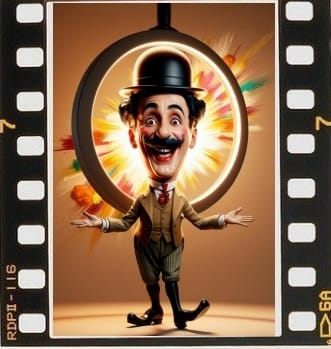
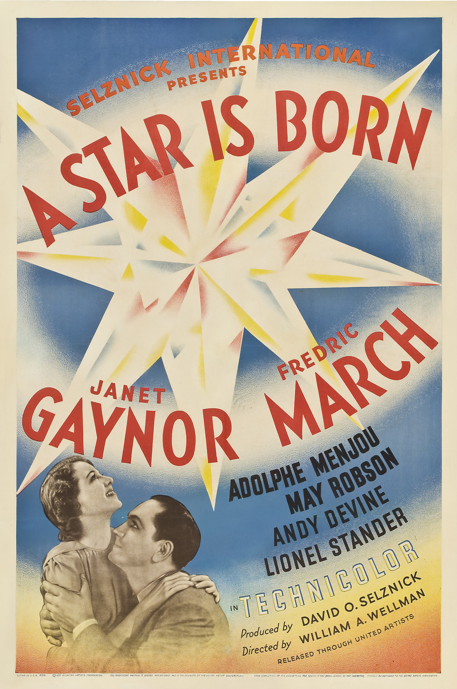
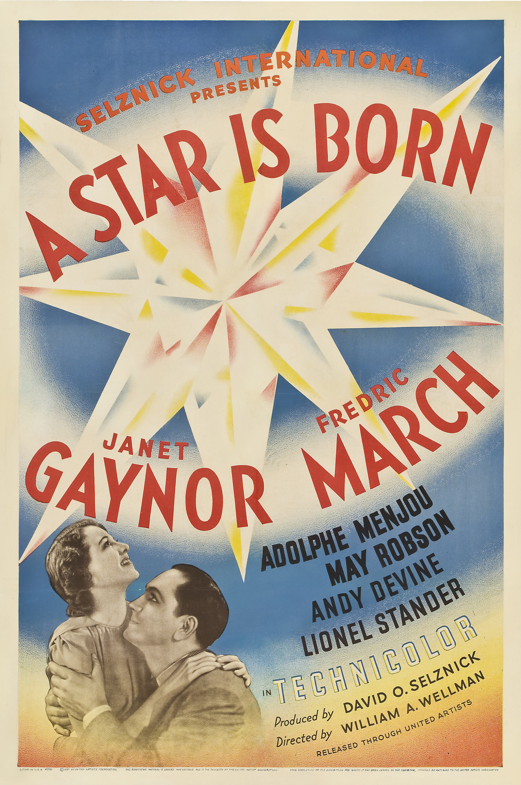
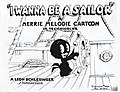
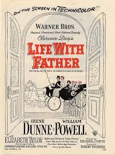
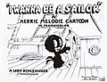
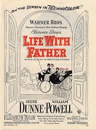

Bienvenidos
¡¡¡Bienvenidos al Cine como Patrimonio!!!
Cine: Más Allá de la Pantalla
Orígenes del Cine
Desde la antigüedad, una lenta etapa experimental precedió al «Cinematógrafo» de los Lumière. Ya fuera por ciencia, curiosidad o espectáculo, se trabajó incansablemente por ofrecer al publico «lo nunca visto», la «ultima maravilla de la ciencia».
Sin esta prehistoria, el cine no hubiera existido. Desde las cavernas, en que la Humanidad dejó plasmados sus dibujos, las sombras chinescas, entre luces de antorchas y sombras, el mito de la caverna de Platón, dejaría de existir, enseñar, divertir y entretener mediante imágenes fue el objetivo de miles de personas, de eruditos e inventores, de actores y saltimbanquis, de fabricantes de juguetes y de comerciantes.
Etimológicamente, la palabra «cinematografía» fue un neologismo creado a finales del siglo XIX y compuesto a partir de dos palabras griegas: por un lado kiné, que significa «movimiento» y por otro γραφóς (grafos) que es «escritura» o «inscripción». Con ello se intentaba definir el concepto de «Imagen en movimiento».
El cine, también conocido como cinematografía, es la técnica y el arte de crear y proyectar películas. Se basa en la captura y reproducción de imágenes en movimiento, lo que genera la ilusión de movimiento continuo.
La historia del cine es fascinante y abarca más de un siglo de innovaciones tecnológicas, artísticas y culturales.
El CINE es una forma de arte y entretenimiento que utiliza la proyección de imágenes en movimiento para contar historias, transmitir ideas y emociones.
El cine es un instrumento de comunicación de masas porque llega a todo el mundo, y de comunicación social porque nos ayuda a conocer mejor nuestro entorno, y a vivir como si fueran propios los sentimientos y valores de otras personas.
El cine ha experimentado una transformación notable desde su nacimiento en 1895 hasta hoy:
- Comenzó como un medio simple en blanco y negro, mudo y con grabaciones básicas de pocos segundos.
- Evolucionó rápidamente con la introducción del sonido, color y técnicas narrativas más sofisticadas durante la época dorada de Hollywood.
- Se transformó artísticamente con movimientos como las nuevas olas cinematográficas, que trajeron más experimentación y profundidad.
- Finalmente, la era digital revolucionó completamente el medio con:
- Efectos especiales avanzados
- Nuevas tecnologías de filmación
- Diversas plataformas de distribución (streaming)
- Mayor accesibilidad para creadores y espectadores
Orígenes del Cine
La historia del cine se inició con los egipcios, los griegos y los romanos. Ellos mostraron la idea del movimiento a través de dibujos sucesivos.
La industria del cine tiene sus orígenes en varios lugares que contribuyeron significativamente a su desarrollo.
- Europa: Fue el epicentro del nacimiento del cine.
- Francia:
- Los hermanos Lumière inventaron el cinematógrafo en 1895 en Lyon, que se considera como el nacimiento del cine, muy a menudo.
- Realizaron la primera proyección pública de cine el 28 de diciembre de 1895 en París, en el Salón Indio del Gran Café de París.
- Georges Méliès estableció el primer estudio de cine en Montreuil, cerca de París, en1896 y fue el pionero de los efectos especiales.
- Reino Unido:
- Los primeros estudios de cine británicos se establecieron en Londres alrededor de 1899.
- Robert W. Paul y Birt Acres realizaron importantes avances en Inglaterra
- Alemania:
- El estudio Babelsberg, el más antiguo del mundo a gran escala, se fundó en 1912 cerca de Berlín.
- Los hermanos Skladanowsky en Alemania presentaron su "Bioskop" en 1895.
- Max y Emil Skladanowsky hicieron la primera proyección pública en Berlín.
- América: Rápidamente, Estados Unidos tomó el liderazgo, especialmente con el establecimiento de Hollywood, aunque Brasil y México también tuvieron desarrollos tempranos.
- Estados Unidos:
- Thomas Edison y su asistente William Dickson desarrollaron el Kinetoscopio en 1890.
- Hollywood, California, emergió como centro de la industria cinematográfica a partir de 1911, cuando se crea el primer estudio.
- Brasil:
- 1896: Primera exhibición cinematográfica en Río de Janeiro.
- 1897: Afonso Segreto filma la primera película brasileña.
- México:
- 1896: Primera proyección cinematográfica en la Ciudad de México.
- 1897: Salvador Toscano Barragán realiza las primeras filmaciones mexicanas.
- Asia: India y Japón fueron pioneros, con desarrollos significativos en los primeros años del siglo XX.
- India:
- La primera película india se proyectó en 1896, y Bombay se convirtió en el centro de la industria cinematográfica india.
- Dadasaheb Phalke, el "Padre del cine indio", dirigió el primer largometraje mudo de India "Raja Harishchandra" (1913).
- Harischandra Sakharam Bhatavdekar filmó "The Wrestlers" (1899) que se considera la primera película india rodada por un cineasta indio.
- Japón:
- Shirō Asano importó el primer proyector cinematográfico a Japón en 1896. Las primeras proyecciones públicas de películas en Japón tuvieron lugar entre 1896-1897.
- Shōzō Makino, el "Padre del cine japonés", fundó el primer estudio de cine permanente en Japón en 1908.
- China:
- 1896: Primera proyección cinematográfica en Shanghái.
- 1905: Ren Qingtai dirige "Dingjun Mountain", considerada la primera película china.
- África: Junto a Oceanía vieron sus primeras proyecciones casi al mismo tiempo que el resto del mundo, pero el desarrollo de industrias cinematográficas locales fue más gradual.
- Egipto:
- 1896: Primera proyección cinematográfica en Alejandría.
- 1907: Se produce la primera película egipcia.
- Sudáfrica:
- 1895: Primera proyección cinematográfica en Johannesburgo.
- 1910: Se produce "The Great Kimberley Diamond Robbery", una de las primeras películas sudafricanas.
- Oceanía: En casi todos los continentes: primero llegaron las proyecciones de películas extranjeras, seguidas por las primeras producciones locales.
- Australia:
- 1896: Primera proyección cinematográfica en Sydney.
- 1906: "The Story of the Kelly Gang" considerado el primer largometraje narrativo del mundo.
- Nueva Zelanda:
- 1896: Primera proyección cinematográfica en Auckland.
- 1898: Se filman las primeras imágenes en movimiento de Nueva Zelanda.
Géneros cinematográficos
El cine nos cuenta una historia a través del sonido, los silencios, los colores, los planos, los movimientos de las cámaras y la imagen. A través del cine se pretende generar hábitos de observación, reflexión, análisis, comprensión e interpretación por medio del pensamiento crítico.
La rica evolución del cine a lo largo del tiempo, en donde se pueden destacar tanto los avances técnicos como las diversas corrientes creativas, tendríamos esta clasificación:
Para un cine más de filmotecas o cinematecas, la clasificación de los géneros cinematográficos reflejan la diversidad y el enfoque más especializado, en las que podrían aplicarse:
Estas categorías reflejan la riqueza y la variedad del cine preservado en filmotecas, ofreciendo una mirada más profunda a la historia y la diversidad del arte cinematográfico.
Patrimonio Fílmico
El patrimonio audiovisual: es una afirmación de nuestra memoria colectiva y una valiosa fuente de conocimiento, ya que reflejan la diversidad cultural, social y lingüística de nuestras comunidades.
El cine nos cuenta una historia a través del sonido, los silencios, los colores, los planos, los movimientos de las cámaras y la imagen. A través del cine se pretende generar hábitos de observación, reflexión, análisis, comprensión e interpretación por medio del pensamiento crítico.
El Cine, entendido como manifestación artística o como documento histórico, es indiscutiblemente integrante de nuestro Patrimonio Cultural, pero no siempre es comprendido como parte de él a la hora de su puesta en valor, su gestión, su conservación o su entrada en los museos.
Es el séptimo arte porque combina habilidosamente elementos artísticos y técnicos para crear una experiencia única e inolvidable para el espectador. El Cine forma parte de nuestro Patrimonio Cultural indiscutiblemente, y por tanto puede entrar en el mundo de los museos de diferentes maneras:
- Puede ser:
- Obra de arte
- Documento histórico
- Cualquier tipo de manifestación cultural
El Patrimonio Cinematográfico alberga numerosos bienes con muy distintas materialidades. El material clasificado como “patrimonio audiovisual” incluye películas, programas de radio, televisión y grabaciones de audio y video.
Si deseas continuar leyendo sobre Patrimonio Fílmico, explora nuestras secciones sobre patrimonio y preservación fílmica.
Visita nuestra página de patrimonio
Galería de imágenes
Inicios del Cine

Chaplin, siempre Chaplin


Galería Archivo
Patrimonio Fílmico
Cine Interactivo
 

 




Películas


"El caballo en movimiento",
Eadweard Muybridge (1878)
¿Cómo se hizo la primera fotografía secuencial?
El caballo en movimiento de Eadweard Muybridge es la primera fotografía secuencial conocida, fue un experimento visual realizado entre 1872 y 1878 en los Estados Unidos por el fotógrafo e investigador británico. Fue capturada en 1878 y utilizado por el entonces gobernador californiano Leland Stanford para investigar si el galope de un caballo hacía que los cuatro cascos estuvieran en el aire al mismo tiempo. Eadweard ideó un plan que consistía en colocar 12 cámaras a lo largo de una pista de carreras para captar al caballo en pleno galope con un número importante de sábanas blancas a manera de fondo para hacer la silueta del caballo más notoria.
Los resultados mostraron que, efectivamente, un caballo tenía todas las pezuñas en el aire brevemente mientras galopaba.
La obra de Eadweard inspiró a muchos otros a hacer sus propios experimentos con la fotografía secuencial y algunos incluso la han considerado una forma de imagen en movimiento. El ingenio de Muybridge y sus futuros trabajos dentro de este campo de estudio serían clave para la invención del cinematógrafo de los hermanos Lumière y el asentamiento de las bases que, casi veinte años después, originarían lo que hoy en día conocemos como cine.
Noticias
Wim Wenders recibe el premio FIAF 2024 en el Maratón de Cine Clásico de Budapest
La FIAF entregó su Premio FIAF 2024 al aclamado cineasta alemán Wim Wenders durante una ceremonia especial en Budapest, Hungría, como parte de la 7ª edición del Maratón de Cine Clásico de Budapest. Leer más
Ramón Rubio Lucia, Premio Nacional de Patrimonio Cinematográfico y Audiovisual 2024
El fallo del jurado ha destacado "su incansable, coherente y entusiasta dedicación" en la recuperación de películas y del material documental Leer más
Día Mundial del Patrimonio Audiovisual 2024
Cada 27 de octubre, los archivos audiovisuales de todo el mundo conmemoran el Día Mundial del Patrimonio Audiovisual. Esta fecha es una iniciativa clave de la UNESCO y del Consejo Coordinador de Asociaciones de Archivos Audiovisuales (CCAAA) para celebrar el trabajo de los archivos y sensibilizar sobre la importancia y urgencia de proteger los materiales Leer más
Páginas con películas para descargar
El cine es una forma de transmisión de la cultura universal de todos los tiempos. Nuestra sociedad se va formando e informando a través del cine y las películas, reportajes o documentales, que permiten otro tipo de acercamiento.
-
Internet Archive es el sitio ideal para disfrutar de 5000 películas de dominio público de forma totalmente gratuita (y legal, no lo olvides).
-
Cine Clásico: las joyas del cine en blanco y negro y los grandes clásicos del Séptimo Arte, se pueden encontrar una buena parte de estas películas.
-
De Dominio Público: más de 500 películas pertenecientes al Dominio Público ofrecidas a través de sus canales oficiales, para ver online, en versiones originales, subtituladas y en español.